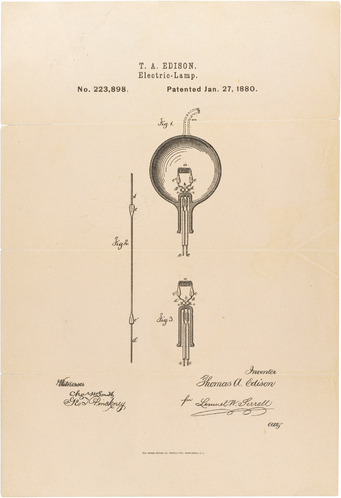
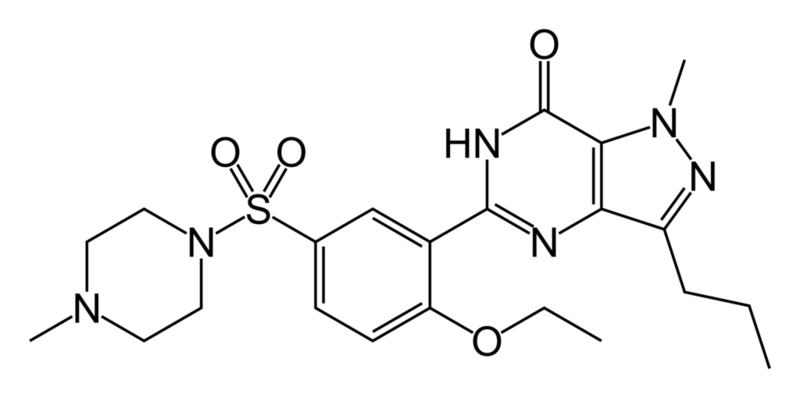
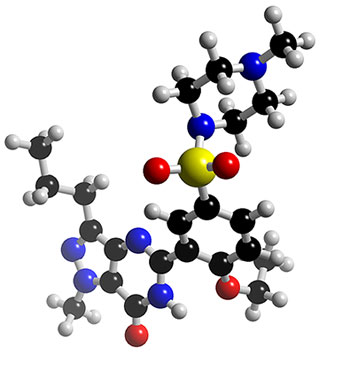

Beyond software being math, software also differs from things that were patented previously. In the biotechnology world, and even the world of Edison, a patent typically covers one product:

Light bulb patent No. 223,898


Viagra Patent No. 6,469,012
Usually, a patent is one product.
Software, however, is different because it is enormous and incorporates thousands of differing ideas. Software products today are not patented in their entirety, only tiny portions of them. Richard Stallman compares software to music: imagine if people could patent chords, how would that affect our ability to create new music?
Jerry Baker, Senior VP of Oracle wrote:
Our engineers and patent counsel have advised me that it may be virtually impossible to develop a complicated software product today without infringing numerous broad existing patents.Microsoft has recently claimed that Linux violates 235 of its patents spread throughout the software stack. This is an enormous number; Verizon has threatened to put Vonage out of business for violating just three obvious patents:
Internet to phone-system connection technology Internet phone features such as voice mail and call-waiting Wireless to Internet phone calls